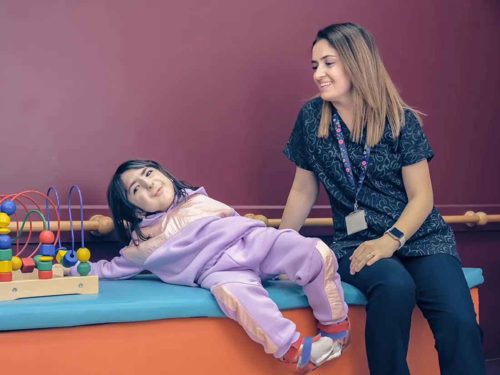

Integración sensorial
Actividades guiadas con movimiento, equilibrio y texturas que buscan ayudar al niño a organizar lo que percibe con sus sentidos y a participar con más tranquilidad en sus rutinas.
Consultar por integración sensorial